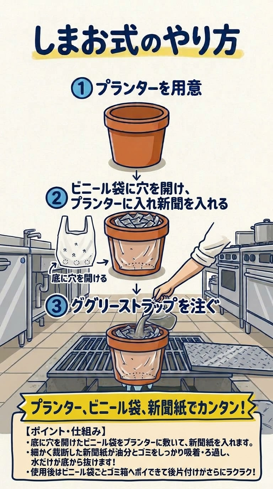

グリーストラップの油とゴミを新聞紙で濾過する方法【しまお式】
プランター、ビニール袋、新聞紙だけでできる、グリーストラップの油分とゴミの濾過方法を図解で紹介します。

用意するもの
- プランター(植木鉢)
- ビニール袋(底に小さな穴を開けておく)
- 細かく裁断した新聞紙
やり方(3ステップ)
- プランターを用意する排水できる場所に、プランターを置きます。
- ビニール袋に穴を開け、プランターに入れて新聞紙を詰める袋の底に穴を開けてプランターに敷き、細かく裁断した新聞紙を入れます。
- グリーストラップの内容物を注ぐ新聞紙が油分とゴミを吸着・濾過し、水だけが底から抜けます。
しくみとポイント
- 底に穴を開けたビニール袋をプランターに敷き、新聞紙を入れます。
- 細かく裁断した新聞紙が油分とゴミを吸着・濾過し、水だけが底から抜けます。
- 使用後はビニール袋ごとゴミ箱へ捨てられるので、後片付けが簡単です。
必ずお読みください
- 廃棄のルールを確認してください。事業所のグリーストラップから出る油や汚泥は、産業廃棄物として許可業者での処理が必要になる場合があります。ゴミ箱に捨てる前に、自治体や専門業者に確認してください。
- 排水のルールを確認してください。濾過した水を流す場合も、下水道条例や排水基準に従ってください。
- 油を吸った新聞紙は発火することがあります。使用後は高温になる場所や火気の近くに置かず、早めに処理してください。
- この方法は個人の工夫の紹介です。実施は自己責任でお願いします。